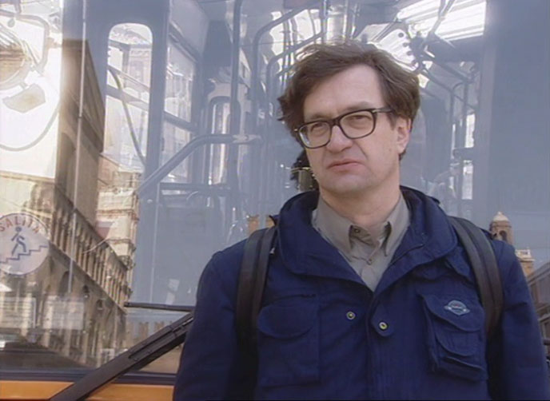
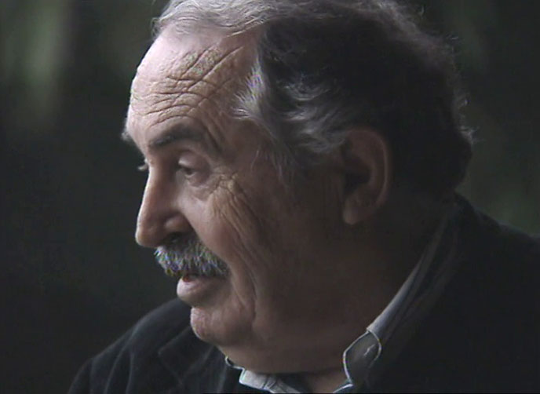
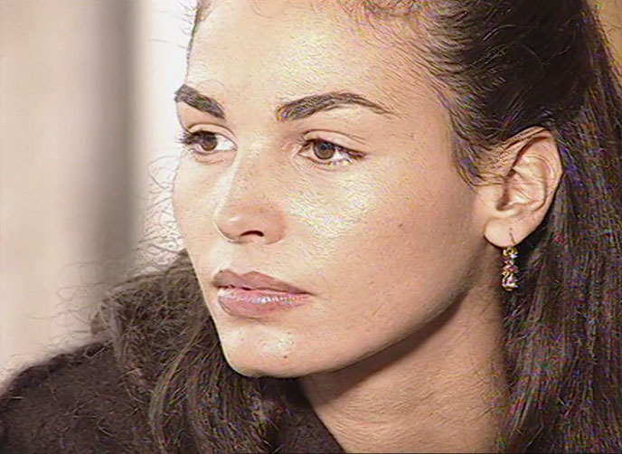
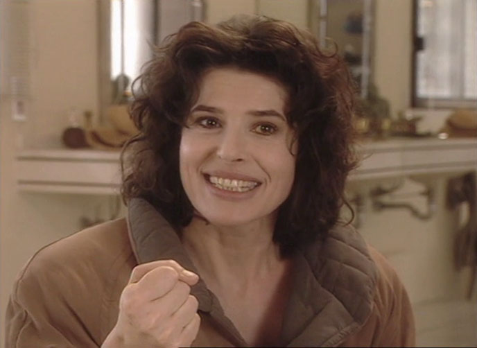
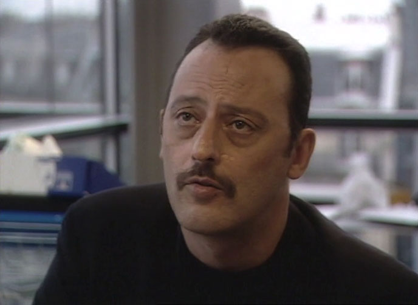

Documenting the master
After a decade away, legendary filmmaker Michelangelo Antoinoni returned with Beyond the Clouds (1995), an adaptation of his short stories co-directed by Wim Wenders. Antonioni's wife Enrica was on set and made the documentary To Make a Film Is to Be Alive (Fare un film per me è vivere).

Along with poetic voiceover of Antonioni's thoughts, the film provides a rare look at his work process and features extensive interviews with key cast members. Longtime collaborator screenwriter Tonino Guerra shares his firsthand impressions of the director's mindset. It’s an illuminating glimpse behind Antonioni’s final feature feature film, complicated by limited mobility and communication.
Interviewees
-
 Wim Wenders -
 Tonino Guerra -
 Inés Sastre -
 Fanny Ardant -
 Jean Reno
Author
Directed by Enrica Antonioni. Produced by Thomas Balmès and Fabrizio Mosca, shot by Agnès Godard and edited by Roberto Missiroli.
How to watch
Buy the Beyond the Clouds DVD and find the documentary among its extras: Amazon UK, Amazon US.
Reviews
From interview pieces with Wenders, we get to understand a little bit more on this collaboration process, and it explains quite clearly the dynamics between the two filmmakers on the set.
Made while Antonioni was working with Wim Wenders on Beyond the Clouds despite a crippling stroke, this moving documentary (by his former wife, the actress and assistant director Enrica Antonioni) is a testament to the filmmaker’s uncompromising vision.